library("gamlss2")
ctrl <- gamlss2_control(trace = FALSE, maxit = 100)Family Extensions
A response distribution should reflect how the observations were obtained. An earthquake sample may exclude small events, a measuring device may stop at a fixed limit, and a proportion may include exact zeros and ones. In each case, a familiar distribution can be a useful starting point, but its support or probabilities need to change before it describes the recorded data.
Family extensions make these changes to an existing family. The result is another gamlss2.family, ready to use in fit_family() or gamlss2(). We begin with earthquake magnitudes and use them to distinguish selection from rounding and grouping. We then consider recording limits, extra point masses, and transformations. Each example connects the observation mechanism to a fitted model.
1 Choosing an observation model
A family extension specifies how a base distribution becomes the the response we observe. Several extensions can be combined when more than one mechanism is involved.
For example, earthquake magnitude can be viewed as a latent continuous quantity. If only events above a threshold are retained and magnitude is reported to one decimal place, its observed family is obtained by truncating the continuous family first and rounding second.
The available constructors cover the following operations.
| Constructor | Operation | Resulting parameters |
|---|---|---|
transform_family() |
Fixed monotone transformation | Base parameters |
logit_family() |
Logistic transformation to \((0, 1)\) | Base parameters |
truncate_family() |
Condition on a fixed interval | Base parameters |
censor_family() |
Fixed censoring limits or a right-censored Surv() response |
Base parameters |
inflate_family() |
Add one or more point masses | Base parameters plus pi1, pi2, … |
hurdle_family() |
Add one point mass and exclude it from the base component | Base parameters plus pi1 |
discretize_family() |
Assign latent intervals to fixed values | Base parameters |
round_family() |
Round a continuous response to fixed decimal precision | Base parameters |
The constants defining the operation—bounds, atom locations, bin breaks, and transformations—are fixed when the family is constructed. They are not additional distributional parameters. Except for inflation and hurdle odds, the parameter names, order, and links of the base family are retained.
2 Truncation: earthquake magnitudes
The base R quakes data contain 1,000 seismic events near Fiji. According to the data description, only events with body-wave magnitude greater than 4.0 were retained. Before choosing a model, it is useful to inspect the response. Its observed minimum is exactly 4.0, and its strongly asymmetric shape at that boundary is immediately visible in a histogram.
data("quakes", package = "datasets")
range(quakes$mag)[1] 4.0 6.4min(quakes$mag)[1] 4The histogram shows the lower boundary and a long right tail. The scatterplot suggests that magnitude also varies with depth. We first investigate the boundary; later we return to the one-decimal reporting precision.
op <- par(mfrow = c(1, 2), mar = c(4, 4, 1, 1))
hist(quakes$mag,
breaks = seq(3.95, max(quakes$mag) + 0.05, by = 0.1),
right = FALSE, border = "white", col = "grey65",
xlab = "Magnitude", main = "")
plot(mag ~ depth, data = quakes,
pch = 16, col = adjustcolor(1, 0.2),
xlab = "Depth (km)", ylab = "Recorded magnitude")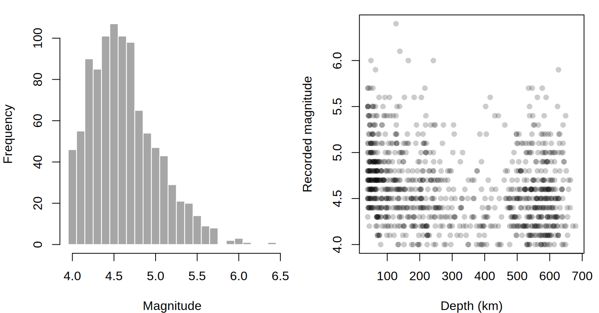
par(op)We first treat the recorded values as numeric measurements and compare an ordinary normal working model with a normal distribution truncated at 4. The endpoint is included so that the recorded value 4.0 is valid; for a continuous latent distribution this does not alter the normalizing probability.
f_norm <- NO
f_trunc <- truncate_family(
NO, lower = 4, include = c(TRUE, TRUE)
)Truncation divides the original density by the probability of falling in the retained interval. For a continuous distribution with a lower boundary at 4, this gives \(f(y \mid Y \geq 4) = f(y)/\{1-F(4)\}\). The parent normal location may lie below 4; it is not the mean of the observed magnitudes. This is how a symmetric parent distribution can produce an asymmetric observed response.
Before adding covariates, we check whether this change helps describe the marginal distribution. fit_family() fits an intercept-only gamlss2() model and overlays its density on a histogram.
op <- par(mfrow = c(1, 2))
mf_norm <- fit_family(quakes$mag, family = NO,
control = ctrl, main = "Normal", xlab = "Magnitude")
mf_trunc <- fit_family(quakes$mag,
family = f_trunc,
control = ctrl, main = "Truncated normal", xlab = "Magnitude")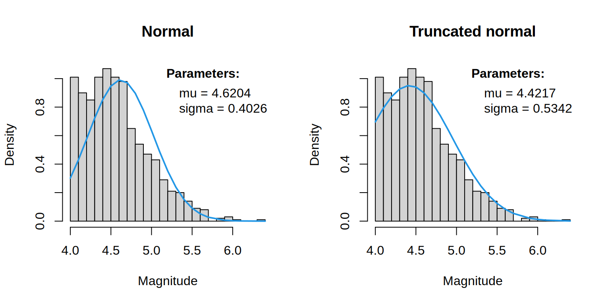
par(op)
AIC(mf_norm, mf_trunc) AIC df
mf_trunc 810.1865 2
mf_norm 1022.1121 2The truncated normal has substantially lower AIC. Compare the lower boundary and the right tail in the two plots to see where the distributions differ. The AIC improvement supports this choice, but does not establish the sampling mechanism: the known selection threshold motivates truncation. Both fits use continuous densities for the same response, so their AIC values are comparable. Treating the recorded decimals as continuous is a working approximation.
The marginal comparison also ignores depth and geographic location. We next use s(depth) and a spatial smooth s(long, lat, k = 30), keeping scale constant. Applying the same regression specification to both families checks whether truncation remains useful after accounting for these covariates.
m_norm <- gamlss2(
mag ~ s(depth) + s(long, lat, k = 30) | 1,
data = quakes,
family = f_norm,
control = ctrl
)
m_trunc <- gamlss2(
mag ~ s(depth) + s(long, lat, k = 30) | 1,
data = quakes,
family = f_trunc,
control = ctrl
)
AIC(m_norm, m_trunc) AIC df
m_trunc 701.4141 7.306881
m_norm 904.5419 13.192164The truncated family also has lower AIC after including the smooth depth and spatial effects. Thus its marginal advantage was not simply a consequence of pooling events from different depths and locations.
3 Rounding: reported measurement precision
The lower threshold explains which events enter the sample. Reporting precision explains why magnitudes occur on a one-decimal grid. We can include both features in the same model. round_family() changes the likelihood contribution from a density at the recorded number to the probability of the latent rounding interval. The response column remains numeric in R, but its statistical treatment is now discrete. For example, a reported value of 4.5 represents an interval approximately from 4.45 to 4.55. Its probability is a difference of CDF values over that interval. With truncation at 4 followed by rounding, the reported value 4.0 represents only the retained part of its rounding interval, from 4 to 4.05.
f_round <- round_family(NO, digits = 1)
f_both <- round_family(
truncate_family(NO, lower = 4),
digits = 1
)
m_round <- gamlss2(
mag ~ s(depth) + s(long, lat, k = 30) | 1,
data = quakes,
family = f_round,
control = ctrl
)
m_both <- gamlss2(
mag ~ s(depth) + s(long, lat, k = 30) | 1,
data = quakes,
family = f_both,
control = ctrl
)
AIC(m_round, m_both) AIC df
m_both 5368.313 7.294337
m_round 5509.784 13.136685This second AIC comparison is valid because both models assign probability mass to the same one-decimal values. In contrast, neither rounded model should be compared by log-likelihood or AIC with m_norm or m_trunc: probability densities and probability masses are defined with respect to different measures and have different units.
The parameters returned by predict() still describe the parent normal family, before selection and rounding. In particular, mu is not the mean of the observed, truncated distribution. Distributional methods, on the other hand, operate on the final recorded scale. Thus, the following curves are rounded predictive quantiles from the truncated-and-rounded model.
nd <- data.frame(
depth = seq(min(quakes$depth), max(quakes$depth), length.out = 150),
long = median(quakes$long),
lat = median(quakes$lat)
)
q <- quantile(m_both, newdata = nd,
probs = c(0.1, 0.5, 0.9))
head(predict(m_both, newdata = nd, drop = FALSE)) mu sigma
1 4.728629 0.4777519
2 4.717094 0.4777519
3 4.705561 0.4777519
4 4.694034 0.4777519
5 4.682520 0.4777519
6 4.671028 0.4777519These curves hold longitude and latitude at their sample medians. The points include all locations, so they show the overall data cloud rather than a sample drawn at that fixed location.
par(mar = c(4, 4, 1, 1))
plot(mag ~ depth, data = quakes,
pch = 16, col = adjustcolor(1, 0.15),
xlab = "Depth (km)", ylab = "Recorded magnitude")
matlines(nd$depth, q,
lty = c(2, 1, 2), lwd = 2, col = 4)
legend("topright", c("10%", "50%", "90%"),
lty = c(2, 1, 2), lwd = 2, col = 4, bty = "n")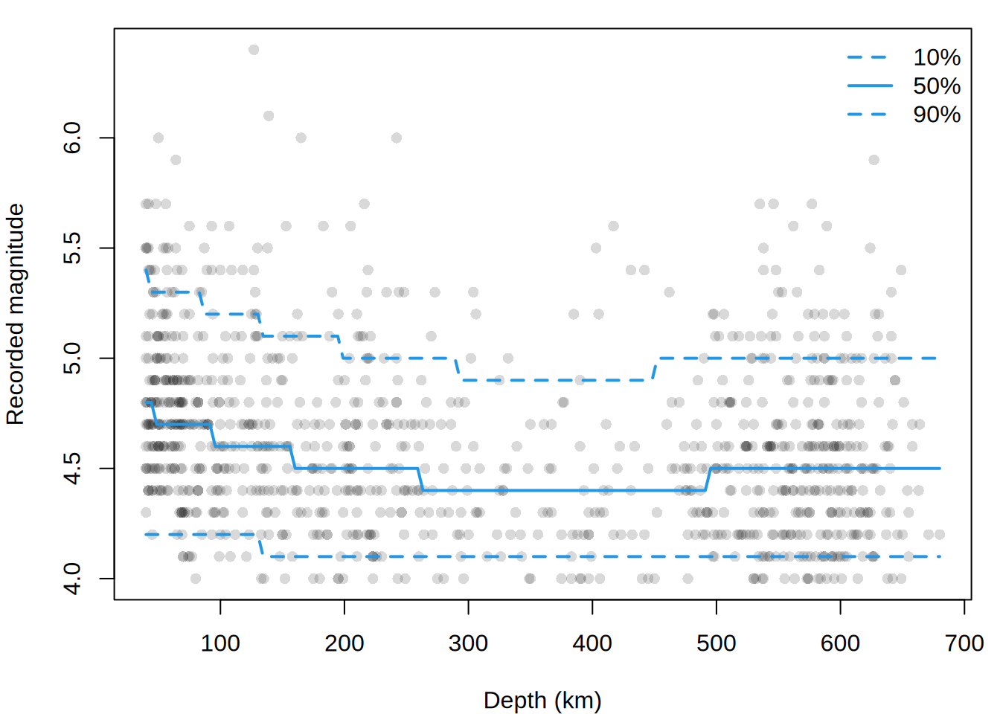
Order is part of the model. The family used above selects a latent event and then rounds its magnitude. Rounding first and then truncating would instead select observations according to the displayed value, which is a different sampling mechanism near the boundary.
4 Discretization: measurements in groups
Rounding uses equal-width intervals determined by decimal precision. discretize_family() generalizes this idea to arbitrary, fixed bins. Each reported value identifies an interval, and the likelihood uses the probability of that interval rather than a density at its representative value.
To illustrate, suppose the earthquake depths were released only in four groups. We create this coarsened response from quakes; these groups are an illustration, not how the original data were recorded. With right = TRUE, the intervals are right-closed:
breaks <- c(-Inf, 100, 300, 500, Inf)
values <- c(50, 200, 400, 600)
f_group <- discretize_family(
NO,
breaks = breaks,
values = values,
right = TRUE
)
quakes$depth_released <- values[
cut(quakes$depth, breaks = breaks, labels = FALSE, right = TRUE)
]
table(quakes$depth_released)
50 200 400 600
256 292 127 325 Each mass is an interval probability under the latent family, rather than a density evaluated at the representative value. We can model the latent normal location as a function of magnitude while fitting the four released values directly.
m_group <- gamlss2(
depth_released ~ s(mag) | 1,
data = quakes,
family = f_group,
control = ctrl
)
head(predict(m_group, drop = FALSE)) mu sigma
1 243.4316 348.3439
2 428.5274 348.3439
3 187.7934 348.3439
4 466.9153 348.3439
5 506.0620 348.3439
6 506.0620 348.3439quantile(m_group,
newdata = data.frame(mag = c(4, 5, 6)),
probs = c(0.1, 0.5, 0.9)
) 10% 50% 90%
1 50 600 600
2 50 200 600
3 50 200 600round_family() is the specialized version for a regular decimal grid. It uses intervals centered on the displayed values and follows the convention of base R’s round(). Both constructors return discrete families and therefore use randomized quantile residuals when fitted.
5 Censoring: measurements at a recording limit
Truncation excludes events from the sample; rounding and grouping record intervals. A recording limit has a different consequence: the observation remains in the data, but we know only that its true value reached or crossed the limit. This is censoring. For upper censoring at \(u\), every \(X \geq u\) is observed as \(u\); the resulting distribution has a point mass of size \(\Pr(X \geq u)\) at the boundary.
The distinction can be illustrated by artificially capping the base R cars stopping distances at 80 feet. The pile-up at 80 is evidence of censoring, not truncation.
data("cars", package = "datasets")
cars$dist80 <- pmin(cars$dist, 80)
table(cars$dist80 == 80)
FALSE TRUE
44 6 par(mar = c(4, 4, 1, 1))
plot(dist80 ~ speed, data = cars,
pch = 16, col = adjustcolor(1, 0.55),
xlab = "Speed (mph)", ylab = "Recorded stopping distance (ft)")
abline(h = 80, lty = 2, col = 2)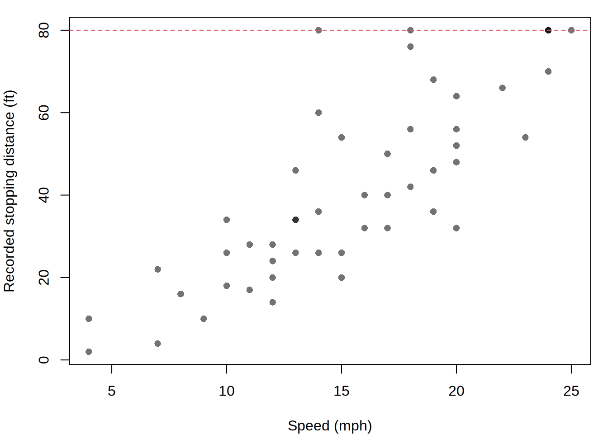
A censored normal model assigns the full upper-tail probability to every recorded value at 80. It can be fitted directly with gamlss2():
f_cens <- censor_family(NO, upper = 80)
# Use the ordinary normal fit only to obtain stable starting values.
m_start <- gamlss2(
dist80 ~ s(speed) | .,
data = cars,
family = NO,
control = ctrl
)
m_cens <- gamlss2(
dist80 ~ s(speed) | .,
data = cars,
family = f_cens,
control = ctrl,
start = coef(m_start)
)
head(predict(m_cens, drop = FALSE)) mu sigma
1 2.49563 7.162719
2 2.49563 7.162719
3 12.81035 8.606083
4 12.81035 8.606083
5 16.26495 9.149164
6 19.73242 9.726516The fitted quantiles show how the conditional distribution changes with speed. Because the recorded response cannot exceed 80, upper quantiles flatten at the censoring limit when enough fitted probability lies above it.
nd <- data.frame(speed = seq(min(cars$speed), max(cars$speed), length.out = 150))
q <- quantile(m_cens, newdata = nd, probs = c(0.1, 0.5, 0.9))
par(mar = c(4, 4, 1, 1))
plot(dist80 ~ speed, data = cars,
pch = 16, col = adjustcolor(1, 0.45),
xlab = "Speed (mph)", ylab = "Recorded stopping distance (ft)",
ylim = range(cars$speed80, q))
matlines(nd$speed, q, lty = c(2, 1, 2), lwd = 2, col = 4)
abline(h = 80, lty = 3, col = 2)
legend("left", c("10%", "50%", "90%", "Limit"),
lty = c(2, 1, 2, 3), lwd = c(2, 2, 2, 1),
col = c(4, 4, 4, 2), bty = "n")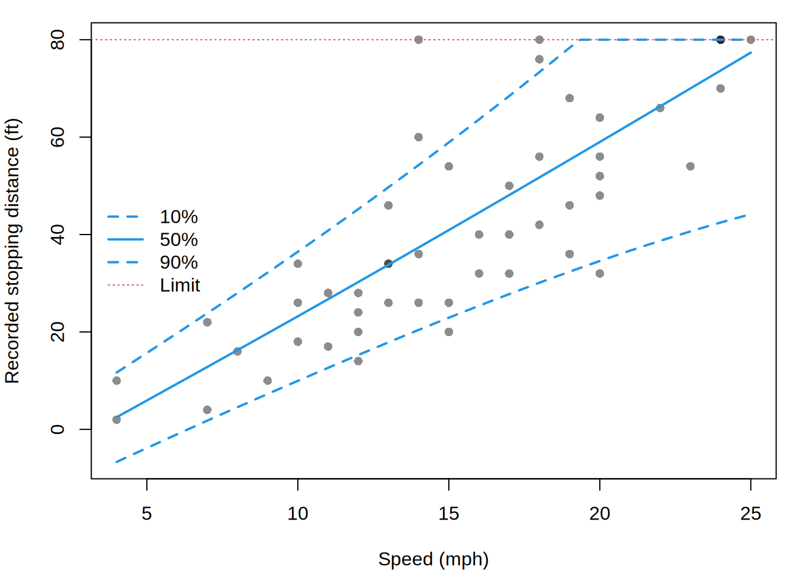
For this example, the chance of reaching the cap is an interpretable fitted quantity. It is the normal upper-tail probability under the predicted parent parameters, and also the point mass assigned to the recorded value 80.
at <- data.frame(speed = c(10, 15, 20, 25))
p <- predict(m_cens, newdata = at, drop = FALSE)
data.frame(at,
probability_at_limit = pnorm(80, p$mu, p$sigma,
lower.tail = FALSE)) speed probability_at_limit
1 10 1.991924e-08
2 15 2.688637e-03
3 20 1.353646e-01
4 25 4.592479e-01Unlike censoring, upper truncation would remove cars whose stopping distance exceeds 80 and renormalize the density among those that remain. For two-sided mechanisms, supply both lower and upper. truncate_family() additionally accepts include, which controls inclusion of each endpoint and matters for discrete base families.
6 Right-censored survival responses
The fixed boundaries of censor_family() describe a recording device that caps every response at the same known value. Survival data are different: each individual can be right-censored at a different observed time, and the response therefore includes both time and event status.
The lung data from the survival package illustrate the appropriate interface. Status code 2 denotes an observed death; code 1 denotes right-censoring.
lung <- survival::lung
lung$event <- lung$status == 2
lung$sex <- factor(lung$sex, levels = 1:2,
labels = c("Male", "Female"))
table(lung$event)
FALSE TRUE
63 165 Calling censor_family(WEI) without a fixed boundary constructs a family for observation-specific right censoring. It accepts a Surv() response directly: an event contributes the Weibull density at its observed time, whereas a right-censored observation contributes the probability of surviving beyond that time. In the WEI parameterization, mu is the Weibull scale and sigma its shape. We model scale by age and sex and keep shape constant.
f_surv <- censor_family(WEI)
m_surv <- gamlss2(
survival::Surv(time, event) ~ s(age) + sex | 1,
data = lung,
family = f_surv,
control = ctrl
)
logLik(m_surv)'log Lik.' -1147.054 (df=4.000001)head(predict(m_surv, drop = FALSE)) mu sigma
1 314.1695 1.326179
2 338.1414 1.326179
3 391.7120 1.326179
4 386.9408 1.326179
5 372.9730 1.326179
6 314.1695 1.326179The likelihood contribution is a density when event is true and a survival probability when it is false. Thus the censoring information remains attached to every observation instead of being encoded by replacing time with one fixed boundary value.
To see the covariate effects on the response scale, predict survival curves for ages 50, 65, and 80, separately for men and women. Predictions use the underlying event-time distribution: \(S(t \mid x) = 1-F(t \mid x)\). The censoring indicator is needed for fitting, but is not a predictor of survival. These are model-based conditional associations.
nd <- expand.grid(age = c(50, 65, 80), sex = c("Male", "Female"))
p <- predict(m_surv, newdata = nd)
time <- seq(0, max(lung$time), length.out = 200)
surv <- sapply(seq_len(nrow(nd)), function(j) {
1 - family(m_surv)$cdf(p[j, , drop = FALSE], time)
})op <- par(mfrow = c(1, 2), mar = c(4, 4, 4, 1))
for(i in c("Male", "Female")) {
j <- which(nd$sex == i)
matplot(time, surv[, j], type = "l", lty = 1:3,
col = c("#0072B2", "#D55E00", "#009E73"), lwd = 2,
ylim = c(0, 1), xlab = "Time (days)", ylab = "Survival probability",
main = i)
legend("topright", paste("Age", nd$age[j]), lty = 1:3,
col = c("#0072B2", "#D55E00", "#009E73"), lwd = 2, bty = "n")
}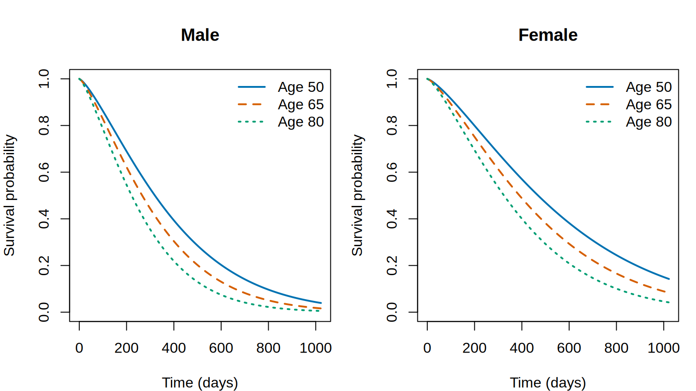
par(op)7 Inflation and hurdles: two ways to model zeros
Inflation adds a source of zeros to an ordinary count distribution. A hurdle model instead models zero versus positive separately, then uses the base distribution conditional on being positive. If \(p\) is the added-component probability and the Poisson mean is \(\mu\), the respective zero probabilities are
\[ \Pr_{\mathrm{inflated}}(Y=0)=p+(1-p)e^{-\mu}, \qquad \Pr_{\mathrm{hurdle}}(Y=0)=p. \]
Thus a hurdle can describe either excess zeros or fewer zeros than the Poisson distribution predicts. Inflation can only add zeros. In both constructors, pi1 is the odds \(p/(1-p)\), with a log link; it is not the overall zero probability in an inflated model.
A further distinction matters when comparing fitted models: for a constant Poisson mean and an excess of zeros, the two models can represent exactly the same count distribution after changing the zero-component probability. Matching fitted curves are therefore possible even when the mechanisms have different interpretations. Counts alone do not identify which mechanism produced those zeros.
7.1 Checking the distributions before regression
We simulate two samples to make these properties visible without confounding them with a poorly fitting positive tail. Both use a Poisson component with mean 1.5. In the first sample, an additional zero component has probability 0.35. In the second, a hurdle assigns only 0.05 probability to zero, below the ordinary Poisson probability \(e^{-1.5}\) of about 0.22.
set.seed(731)
f_infl <- inflate_family(PO, at = 0)
f_hurd <- hurdle_family(PO, at = 0)
ys <- list(
"Excess zeros" = f_infl$random(
list(mu = 1.5, pi1 = 0.35 / 0.65), 800),
"Few zeros" = f_hurd$random(
list(mu = 1.5, pi1 = 0.05 / 0.95), 800)
)
vapply(ys, function(y) mean(y == 0), numeric(1))Excess zeros Few zeros
0.4975 0.0425 Fit all three distributions to each sample. The plots compare empirical frequencies with fitted probabilities over the same count range.
op <- par(mfrow = c(2, 3), mar = c(4, 4, 3, 1))
fits <- lapply(names(ys), function(label) {
y <- ys[[label]]
fits <- list(
Poisson = fit_family(y, family = PO, control = ctrl,
main = paste(label, "Poisson", sep = ": "), xlab = "Count",
xlim = c(0, 8), ylim = c(0, 0.65)),
Inflated = fit_family(y, family = f_infl, control = ctrl,
main = paste(label, "Inflated", sep = ": "), xlab = "Count",
xlim = c(0, 8), ylim = c(0, 0.65)),
Hurdle = fit_family(y, family = f_hurd, control = ctrl,
main = paste(label, "Hurdle", sep = ": "), xlab = "Count",
xlim = c(0, 8), ylim = c(0, 0.65))
)
fits
})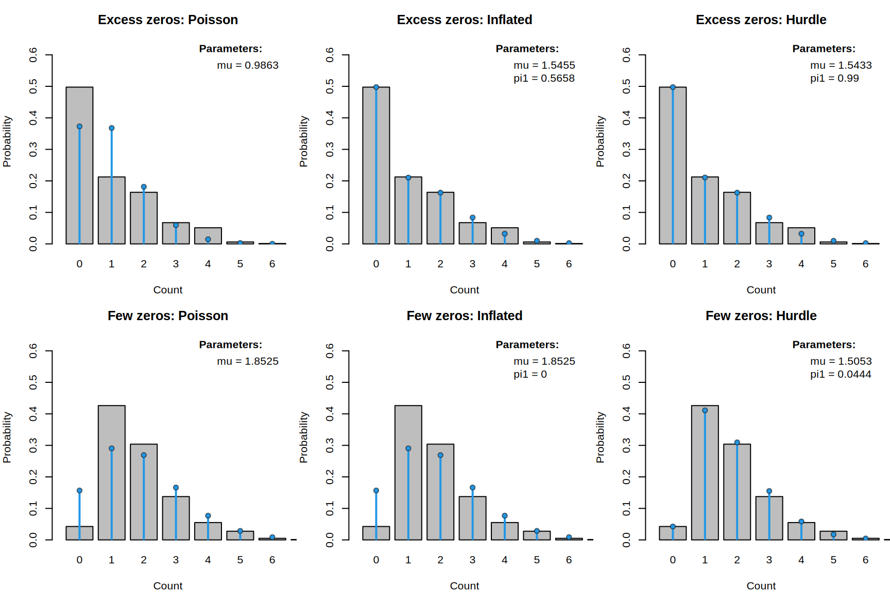
par(op)
names(fits) <- names(ys)
lapply(fits, function(fits) AIC(fits$Poisson, fits$Inflated, fits$Hurdle))$`Excess zeros`
AIC df
fits$Hurdle 2172.577 2
fits$Inflated 2172.578 2
fits$Poisson 2298.596 1
$`Few zeros`
AIC df
fits$Hurdle 2306.951 2
fits$Poisson 2450.856 1
fits$Inflated 2452.863 2For excess zeros, inflation and a hurdle should both follow the data, and can give essentially identical fits. For the second sample, the hurdle can represent the low zero probability while preserving the positive-count shape. The inflated fit approaches ordinary Poisson as its extra-zero odds approach zero, but cannot remove natural Poisson zeros. AIC comparisons here are within each sample, never between the two different samples.
7.2 Count regression
We next simulate a regression example in which both the positive counts and the probability of zero change with x. This lets us check whether the fitted model recovers each part of the distribution.
set.seed(732)
dat <- data.frame(x = runif(1000, -2, 2))
dat$y <- f_hurd$random(list(
mu = exp(0.3 + 0.5 * sin(dat$x)),
pi1 = exp(-1.5 + 0.8 * dat$x)
), nrow(dat))
m_hurd <- gamlss2(y ~ s(x) | s(x), data = dat,
family = f_hurd, control = ctrl)
nd <- data.frame(x = seq(-2, 2, length.out = 150))
p <- predict(m_hurd, newdata = nd, drop = FALSE)
p0 <- p$pi1 / (1 + p$pi1)
mpos <- p$mu / (-expm1(-p$mu))Here mu is the parent Poisson mean, not the mean of the positive counts. Conditioning on positivity gives \(E(Y \mid Y>0,x)=\mu/(1-e^{-\mu})\). The plots compare these fitted quantities with the known simulation curves.
op <- par(mfrow = c(1, 2), mar = c(4, 4, 1, 1))
plot(nd$x, p0, type = "l", col = 4, lwd = 2,
ylim = c(0, 1), xlab = "x", ylab = "Probability of zero")
lines(nd$x, plogis(-1.5 + 0.8 * nd$x), lty = 2, lwd = 2)
legend("topleft", c("Fitted", "Generating model"),
col = c(4, 1), lty = c(1, 2), lwd = 2, bty = "n")
mu <- exp(0.3 + 0.5 * sin(nd$x))
mpos0 <- mu / (-expm1(-mu))
plot(nd$x, mpos, type = "l", col = 4, lwd = 2,
ylim = range(c(mpos, mpos0)),
xlab = "x", ylab = "Mean among positive counts")
lines(nd$x, mpos0, lty = 2, lwd = 2)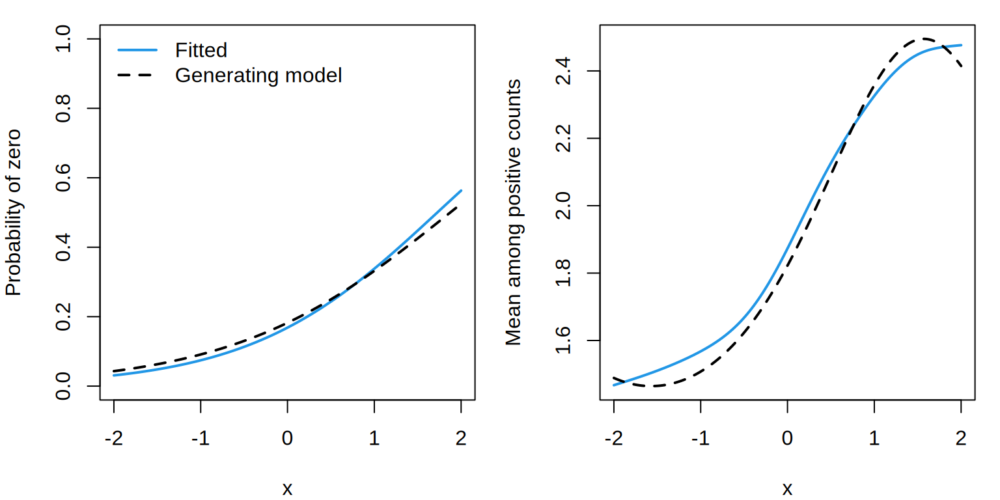
par(op)7.3 Proportions with exact endpoints
Point masses are also useful for continuous responses. Several inflation points are allowed, giving a model for proportions that can attain both endpoints while otherwise varying continuously. logit_family(NO) maps a normal variable through the logistic function, producing values strictly between 0 and 1. Inflation then adds the two endpoints. Here we simulate data with a known mechanism so that the role of each component is clear. mu and sigma govern the latent logistic-normal component, while pi1 and pi2 are odds for exact zero and exact one, respectively.
set.seed(2026)
dat <- data.frame(x = runif(250, -2, 2))
f_01 <- inflate_family(
logit_family(NO),
at = c(0, 1)
)
dat$proportion <- f_01$random(
list(
mu = sin(1.5 * dat$x),
sigma = exp(-1 + cos(dat$x)),
pi1 = 0.15,
pi2 = 0.10
),
nrow(dat)
)
m_01 <- gamlss2(
proportion ~ s(x) | s(x),
data = dat,
family = f_01,
control = ctrl
)
head(predict(m_01, drop = FALSE)) mu sigma pi1 pi2
1 1.0938435 0.8009455 0.1449275 0.06280193
2 0.3952639 0.7349777 0.1449275 0.06280193
3 -0.8509402 0.5713770 0.1449275 0.06280193
4 -1.0277454 0.6239584 0.1449275 0.06280193
5 0.3871141 0.7344617 0.1449275 0.06280193
6 -0.3540189 0.5329903 0.1449275 0.06280193We can now inspect fitted quantiles across x. Because these describe the complete distribution, they include the endpoint masses as well as the continuous interior.
nd <- data.frame(x = seq(-2, 2, length.out = 150))
q <- quantile(m_01, newdata = nd,
probs = c(0.1, 0.5, 0.9))
par(mar = c(4, 4, 1, 1))
plot(proportion ~ x, data = dat,
pch = 16, col = adjustcolor(1, 0.3), ylab = "Proportion")
matlines(nd$x, q,
lty = c(2, 1, 2), lwd = 2, col = 4)
legend("topleft", c("10%", "50%", "90%"),
lty = c(2, 1, 2), lwd = 2, col = 4, bty = "n")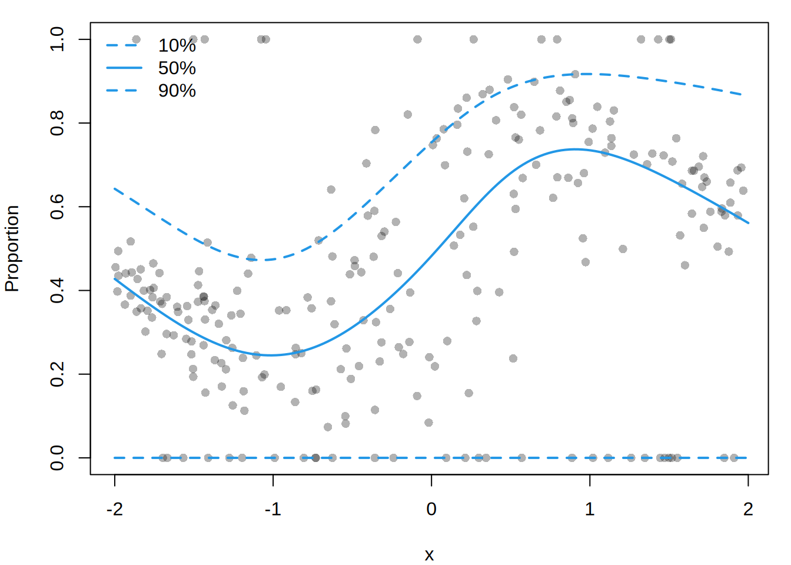
The smooth estimates how the interior distribution changes with x; the endpoint odds are constant in this example. The four right-hand sides correspond, in order, to mu, sigma, pi1, and pi2. Exact endpoints are handled as masses; interior observations retain a continuous density contribution.
8 Transformations: modeling a positive response
transform_family() describes the distribution of \(Y = g(X)\) when \(X\) follows a continuous base family and \(g\) is a fixed monotone transformation. In addition to g, it needs the inverse transformation and the log absolute Jacobian of the inverse:
\[ \log f_Y(y) = \log f_X\{g^{-1}(y)\} + \log \left|\frac{d g^{-1}(y)}{dy}\right|. \]
The logistic transformation above restricts a response to an interval. Exponentiating a normal variable instead produces a positive, right-skewed lognormal distribution. Tree volume in the base R trees data provides an example. The Jacobian ensures that the transformed density integrates to one and that the likelihood is expressed on the original volume scale.
f_lnorm <- transform_family(
family = NO,
transform = exp,
inverse = log,
log_jacobian = function(y) -log(y),
support = c(0, Inf),
valid.response = function(y) {
is.na(y) | (is.finite(y) & y > 0)
},
name = "Lognormal"
)
data("trees", package = "datasets")First compare normal and lognormal marginal fits. Both are densities on the volume scale, so their AIC values are comparable. A model fitted to log(Volume) without the Jacobian would use a different response scale.
op <- par(mfrow = c(1, 2))
mf_norm <- fit_family(trees$Volume, family = NO,
control = ctrl, main = "Normal", xlab = "Volume")
mf_lnorm <- fit_family(trees$Volume, family = f_lnorm,
control = ctrl, main = "Lognormal", xlab = "Volume")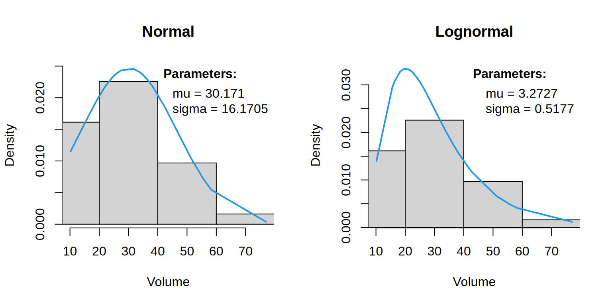
par(op)
AIC(mf_norm, mf_lnorm) AIC df
mf_lnorm 254.0663 2
mf_norm 264.5321 2The lognormal has lower marginal AIC in this comparison. This is a useful starting point, but the marginal distribution combines trees of different sizes and does not determine the best conditional family. We now model the location of log volume as a smooth function of girth and inspect conditional quantiles on the original volume scale.
m_lnorm <- gamlss2(
Volume ~ s(Girth) | 1,
data = trees,
family = f_lnorm,
control = ctrl
)nd <- data.frame(Girth = seq(min(trees$Girth), max(trees$Girth),
length.out = 100))
q <- quantile(m_lnorm, newdata = nd,
probs = c(0.1, 0.5, 0.9))par(mar = c(4, 4, 1, 1))
plot(Volume ~ Girth, data = trees,
pch = 16, col = adjustcolor(1, 0.55),
xlab = "Girth (in)", ylab = "Volume (ft^3)",
ylim = range(trees$Volume, q))
matlines(nd$Girth, q,
lty = c(2, 1, 2), lwd = 2, col = 4)
legend("topleft", c("10%", "50%", "90%"),
lty = c(2, 1, 2), lwd = 2, col = 4, bty = "n")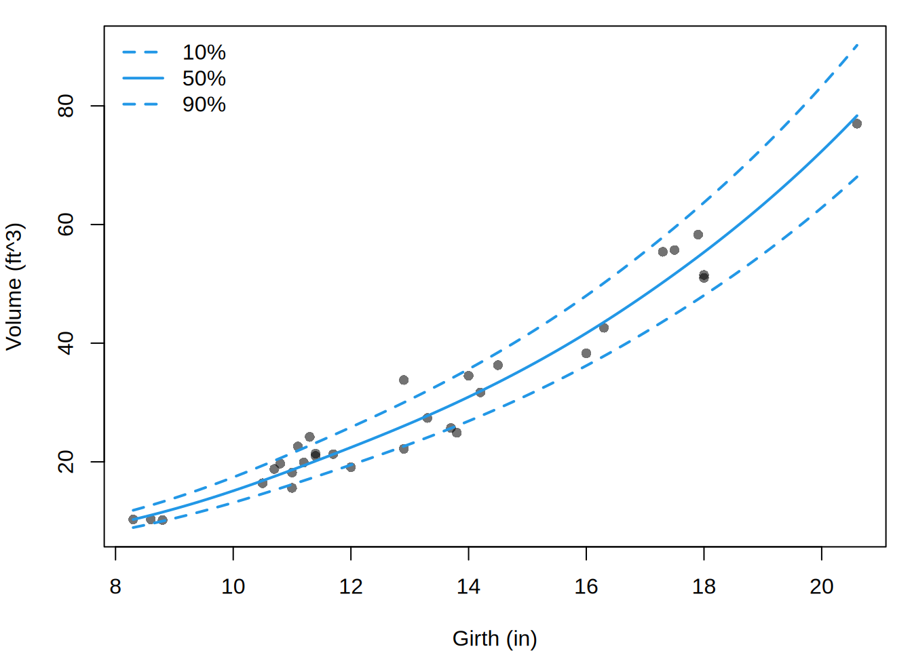
Decreasing transformations are supported with increasing = FALSE. logit_family() is the ready-made logistic transformation of a continuous family. It has strict support \(0 < Y < 1\); exact endpoints require a different mechanism, such as the inflated endpoint family above.
9 Practical guidance
The family extension should describe how a latent response becomes an observed response. In practice:
- Start with the family for the latent response.
- Apply extensions from the inside out in the order the mechanisms occur.
- Use
fit_family()to inspect marginal fit. Compare AIC only for models fitted to the same response with compatible likelihoods. - Add covariates with
gamlss2(), usings()for nonlinear effects, and check whether the extended family remains useful conditionally. - Interpret
predict()parameters on the base-family scale, but interpret probabilities, quantiles, simulations, and residuals under the fully extended family.
A few boundaries of the infrastructure are intentional. Constants passed to the extension constructors are fixed. censor_family() also accepts observation-specific right-censoring times through a Surv() response; other censoring types need a specialized family. Estimated transformation parameters require a family that explicitly includes them. Generic censored and rounded means and variances are not reported because exact calculation would require partial moments that are not part of the family interface. Arbitrary weighted distributions, splices, non-monotone transformations, convolutions, and compound distributions are likewise outside this infrastructure.
Finally, match the family to the actual observation process. A pile-up at a detection limit suggests censoring; missing out-of-range cases imply truncation; extra and natural zeros together imply inflation; and a separate zero-generating process suggests a hurdle. These choices are scientifically different even when the observed histograms look similar.
See ?family_extensions for the complete argument and return-value reference for all constructors.